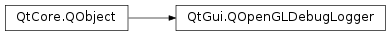

QOpenGLDebugLogger¶
Note
This class was introduced in Qt 5.1.
Synopsis¶
Functions¶
- def
disableMessages([sources=QOpenGLDebugMessage.AnySource[, types=QOpenGLDebugMessage.AnyType[, severities=QOpenGLDebugMessage.AnySeverity]]]) - def
disableMessages(ids[, sources=QOpenGLDebugMessage.AnySource[, types=QOpenGLDebugMessage.AnyType]]) - def
enableMessages([sources=QOpenGLDebugMessage.AnySource[, types=QOpenGLDebugMessage.AnyType[, severities=QOpenGLDebugMessage.AnySeverity]]]) - def
enableMessages(ids[, sources=QOpenGLDebugMessage.AnySource[, types=QOpenGLDebugMessage.AnyType]]) - def
initialize() - def
isLogging() - def
loggedMessages() - def
loggingMode() - def
maximumMessageLength() - def
popGroup() - def
pushGroup(name[, id=0[, source=QOpenGLDebugMessage.ApplicationSource]])
Slots¶
- def
logMessage(debugMessage) - def
startLogging([loggingMode=AsynchronousLogging]) - def
stopLogging()
Signals¶
- def
messageLogged(debugMessage)
Detailed Description¶
ThePySide2.QtGui.QOpenGLDebugLoggerenables logging of OpenGL debugging messages.
Introduction¶
OpenGL programming can be very error prone. Most of the time, a single failing call to OpenGL can cause an entire portion of an application to stop working, with nothing being drawn on the screen.
The only way to be sure that no errors are being returned from the OpenGL implementation is checking with
glGetErrorafter each and every API call. Moreover, OpenGL errors stack up, therefore glGetError should always be used in a loop like this:GLenum error = GL_NO_ERROR; do { error = glGetError(); if (error != GL_NO_ERROR) // handle the error } while (error != GL_NO_ERROR);There are also many other information we are interested in (as application developers), for instance performance issues, or warnings about using deprecated APIs. Those kind of messages are not reported through the ordinary OpenGL error reporting mechanisms.
PySide2.QtGui.QOpenGLDebugLoggeraims at addressing these issues by providing access to the OpenGL debug log . If your OpenGL implementation supports it (by exposing theGL_KHR_debugextension), messages from the OpenGL server will be either logged in an internal OpenGL log, or passed in “real-time” to listeners as they’re generated from OpenGL.
PySide2.QtGui.QOpenGLDebugLoggersupports both these modes of operation. Refer to the following sections to find out the differences between them.
Creating an OpenGL Debug Context¶
For efficiency reasons, OpenGL implementations are allowed not to create any debug output at all, unless the OpenGL context is a debug context. In order to create a debug context from Qt, you must set the
QSurfaceFormat.DebugContextformat option on thePySide2.QtGui.QSurfaceFormatused to create thePySide2.QtGui.QOpenGLContextobject:QSurfaceFormat format; // asks for a OpenGL 3.2 debug context using the Core profile format.setMajorVersion(3); format.setMinorVersion(2); format.setProfile(QSurfaceFormat::CoreProfile); format.setOption(QSurfaceFormat::DebugContext); QOpenGLContext *context = new QOpenGLContext; context->setFormat(format); context->create();Note that requesting a 3.2 OpenGL Core Profile is just for the example’s purposes; this class is not tied to any specific OpenGL or OpenGL ES version, as it relies on the availability of the
GL_KHR_debugextension (see below).
Creating and Initializing a QOpenGLDebugLogger¶
PySide2.QtGui.QOpenGLDebugLoggeris a simplePySide2.QtCore.QObject-derived class. Just like allPySide2.QtCore.QObjectsubclasses, you create an instance (and optionally specify a parent object), and like the other OpenGL functions in Qt you must initialize it before usage by callingPySide2.QtGui.QOpenGLDebugLogger.initialize()whilst there is a current OpenGL context:QOpenGLContext *ctx = QOpenGLContext::currentContext(); QOpenGLDebugLogger *logger = new QOpenGLDebugLogger(this); logger->initialize(); // initializes in the current context, i.e. ctxNote that the
GL_KHR_debugextension must be available in the context in order to access the messages logged by OpenGL. You can check the presence of this extension by calling:ctx->hasExtension(QByteArrayLiteral("GL_KHR_debug"))where
ctxis a validPySide2.QtGui.QOpenGLContext. If the extension is not available,PySide2.QtGui.QOpenGLDebugLogger.initialize()will return false.
Reading the Internal OpenGL Debug Log¶
OpenGL implementations keep an internal log of debug messages. Messages stored in this log can be retrieved by using the
PySide2.QtGui.QOpenGLDebugLogger.loggedMessages()function:const QList<QOpenGLDebugMessage> messages = logger->loggedMessages(); for (const QOpenGLDebugMessage &message : messages) qDebug() << message;The internal log has a limited size; when it fills up, older messages will get discarded to make room for the new incoming messages. When you call
PySide2.QtGui.QOpenGLDebugLogger.loggedMessages(), the internal log will be emptied as well.If you want to be sure not to lose any debug message, you must use real-time logging instead of calling this function. However, debug messages might still be generated in the timespan between context creation and activation of real-time logging (or, in general, when the real-time logging is disabled).
Real-time logging of messages¶
It is also possible to receive a stream of debug messages from the OpenGL server as they are generated by the implementation. In order to do so, you need to connect a suitable slot to the
PySide2.QtGui.QOpenGLDebugLogger.messageLogged()signal, and start logging by callingPySide2.QtGui.QOpenGLDebugLogger.startLogging():connect(logger, &QOpenGLDebugLogger::messageLogged, receiver, &LogHandler::handleLoggedMessage); logger->startLogging();Similarly, logging can be disabled at any time by calling the
PySide2.QtGui.QOpenGLDebugLogger.stopLogging()function.Real-time logging can be either asynchronous or synchronous, depending on the parameter passed to
PySide2.QtGui.QOpenGLDebugLogger.startLogging(). When logging in asynchronous mode (the default, as it has a very small overhead), the OpenGL implementation can generate messages at any time, and/or in an order which is different from the order of the OpenGL commands which caused those messages to be logged. The messages could also be generated from a thread that it’s different from the thread the context is currently bound to. This is because OpenGL implementations are usually highly threaded and asynchronous, and therefore no warranties are made about the relative order and the timings of the debug messages.On the other hand, logging in synchronous mode has a high overhead, but the OpenGL implementation guarantees that all the messages caused by a certain command are received in order, before the command returns, and from the same thread the OpenGL context is bound to.
This means that when logging in synchronous mode you will be able to run your OpenGL application in a debugger, put a breakpoint on a slot connected to the
PySide2.QtGui.QOpenGLDebugLogger.messageLogged()signal, and see in the backtrace the exact call that caused the logged message. This can be extremely useful to debug an OpenGL problem. Note that if OpenGL rendering is happening in another thread, you must force the signal/slot connection type toQt.DirectConnectionin order to be able to see the actual backtrace.Refer to the
QOpenGLDebugLogger.LoggingModeenum documentation for more information about logging modes.Note
When real-time logging is enabled, debug messages will not be inserted in the internal OpenGL debug log any more; messages already present in the internal log will not be deleted, nor they will be emitted through the
PySide2.QtGui.QOpenGLDebugLogger.messageLogged()signal. Since some messages might be generated before real-time logging is started (and therefore be kept in the internal OpenGL log), it is important to always check if it contains any message after callingPySide2.QtGui.QOpenGLDebugLogger.startLogging().
Inserting Messages in the Debug Log¶
It is possible for applications and libraries to insert custom messages in the debug log, for instance for marking a group of related OpenGL commands and therefore being then able to identify eventual messages coming from them.
In order to do so, you can create a
PySide2.QtGui.QOpenGLDebugMessageobject by callingPySide2.QtGui.QOpenGLDebugMessage.createApplicationMessage()orPySide2.QtGui.QOpenGLDebugMessage.createThirdPartyMessage(), and then inserting it into the log by callingPySide2.QtGui.QOpenGLDebugLogger.logMessage():QOpenGLDebugMessage message = QOpenGLDebugMessage::createApplicationMessage(QStringLiteral("Custom message")); logger->logMessage(message);Note that OpenGL implementations have a vendor-specific limit to the length of the messages that can be inserted in the debug log. You can retrieve this length by calling the
PySide2.QtGui.QOpenGLDebugLogger.maximumMessageLength()method; messages longer than the limit will automatically get truncated.
Controlling the Debug Output¶
PySide2.QtGui.QOpenGLDebugMessageis also able to apply filters to the debug messages, and therefore limit the amount of messages logged. You can enable or disable logging of messages by callingPySide2.QtGui.QOpenGLDebugLogger.enableMessages()andPySide2.QtGui.QOpenGLDebugLogger.disableMessages()respectively. By default, all messages are logged.It is possible to enable or disable messages by selecting them by:
- source, type and severity (and including all ids in the selection);
- id, source and type (and including all severities in the selection).
Note that the “enabled” status for a given message is a property of the (id, source, type, severity) tuple; the message attributes do not form a hierarchy of any kind. You should be careful about the order of the calls to
PySide2.QtGui.QOpenGLDebugLogger.enableMessages()andPySide2.QtGui.QOpenGLDebugLogger.disableMessages(), as it will change which messages will are enabled / disabled.It’s not possible to filter by the message text itself; applications have to do that on their own (in slots connected to the
PySide2.QtGui.QOpenGLDebugLogger.messageLogged()signal, or after fetching the messages in the internal debug log throughPySide2.QtGui.QOpenGLDebugLogger.loggedMessages()).In order to simplify the management of the enabled / disabled statuses,
PySide2.QtGui.QOpenGLDebugMessagealso supports the concept ofdebug groups. A debug group contains the group of enabled / disabled configurations of debug messages. Moreover, debug groups are organized in a stack: it is possible to push and pop groups by callingPySide2.QtGui.QOpenGLDebugLogger.pushGroup()andPySide2.QtGui.QOpenGLDebugLogger.popGroup()respectively. (When an OpenGL context is created, there is already a group in the stack).The
PySide2.QtGui.QOpenGLDebugLogger.enableMessages()andPySide2.QtGui.QOpenGLDebugLogger.disableMessages()functions will modify the configuration in the current debug group, that is, the one at the top of the debug groups stack.When a new group is pushed onto the debug groups stack, it will inherit the configuration of the group that was previously on the top of the stack. Vice versa, popping a debug group will restore the configuration of the debug group that becomes the new top.
Pushing (respectively popping) debug groups will also automatically generate a debug message of type
QOpenGLDebugMessage.GroupPushType(respectivelyGroupPopType).See also
-
class
PySide2.QtGui.QOpenGLDebugLogger([parent=nullptr])¶ Parameters: parent – PySide2.QtCore.QObjectConstructs a new logger object with the given
parent.Note
The object must be initialized before logging can happen.
-
PySide2.QtGui.QOpenGLDebugLogger.LoggingMode¶ The enum defines the logging mode of the logger object.
Constant Description QOpenGLDebugLogger.AsynchronousLogging Messages from the OpenGL server are logged asynchronously. This means that messages can be logged some time after the corresponding OpenGL actions that caused them, and even be received in an out-of-order fashion, depending on the OpenGL implementation. This mode has a very low performance penalty, as OpenGL implementations are heavily threaded and asynchronous by nature. QOpenGLDebugLogger.SynchronousLogging Messages from the OpenGL server are logged synchronously and sequentially. This has a severe performance hit, as OpenGL implementations are very asynchronous by nature; but it’s very useful to debug OpenGL problems, as OpenGL guarantees that the messages generated by a OpenGL command will be logged before the corresponding command execution has returned. Therefore, you can install a breakpoint on the PySide2.QtGui.QOpenGLDebugLogger.messageLogged()signal and see in the backtrace which OpenGL command caused it; the only caveat is that if you are using OpenGL from multiple threads you may need to force direct connection when connecting to thePySide2.QtGui.QOpenGLDebugLogger.messageLogged()signal.
-
PySide2.QtGui.QOpenGLDebugLogger.disableMessages(ids[, sources=QOpenGLDebugMessage.AnySource[, types=QOpenGLDebugMessage.AnyType]])¶ Parameters: - ids –
- sources –
PySide2.QtGui.QOpenGLDebugMessage.Sources - types –
PySide2.QtGui.QOpenGLDebugMessage.Types
Disables the logging of messages with the given
ids, from the givensourcesand of the giventypesand any severity.The logging will be disabled in the current control group.
-
PySide2.QtGui.QOpenGLDebugLogger.disableMessages([sources=QOpenGLDebugMessage.AnySource[, types=QOpenGLDebugMessage.AnyType[, severities=QOpenGLDebugMessage.AnySeverity]]]) Parameters: - sources –
PySide2.QtGui.QOpenGLDebugMessage.Sources - types –
PySide2.QtGui.QOpenGLDebugMessage.Types - severities –
PySide2.QtGui.QOpenGLDebugMessage.Severities
Disables the logging of messages with the given
sources, of the giventypesand with the givenseveritiesand any message id.The logging will be disabled in the current control group.
- sources –
-
PySide2.QtGui.QOpenGLDebugLogger.enableMessages([sources=QOpenGLDebugMessage.AnySource[, types=QOpenGLDebugMessage.AnyType[, severities=QOpenGLDebugMessage.AnySeverity]]])¶ Parameters: - sources –
PySide2.QtGui.QOpenGLDebugMessage.Sources - types –
PySide2.QtGui.QOpenGLDebugMessage.Types - severities –
PySide2.QtGui.QOpenGLDebugMessage.Severities
Enables the logging of messages from the given
sources, of the giventypesand with the givenseveritiesand any message id.The logging will be enabled in the current control group.
- sources –
-
PySide2.QtGui.QOpenGLDebugLogger.enableMessages(ids[, sources=QOpenGLDebugMessage.AnySource[, types=QOpenGLDebugMessage.AnyType]]) Parameters: - ids –
- sources –
PySide2.QtGui.QOpenGLDebugMessage.Sources - types –
PySide2.QtGui.QOpenGLDebugMessage.Types
Enables the logging of messages with the given
ids, from the givensourcesand of the giventypesand any severity.The logging will be enabled in the current control group.
-
PySide2.QtGui.QOpenGLDebugLogger.initialize()¶ Return type: PySide2.QtCore.boolInitializes the object in the current OpenGL context. The context must support the
GL_KHR_debugextension for the initialization to succeed. The object must be initialized before any logging can happen.It is safe to call this function multiple times from the same context.
This function can also be used to change the context of a previously initialized object; note that in this case the object must not be logging when you call this function.
Returns
trueif the logger is successfully initialized; false otherwise.See also
-
PySide2.QtGui.QOpenGLDebugLogger.isLogging()¶ Return type: PySide2.QtCore.boolReturns
trueif this object is currently logging, false otherwise.
-
PySide2.QtGui.QOpenGLDebugLogger.logMessage(debugMessage)¶ Parameters: debugMessage – PySide2.QtGui.QOpenGLDebugMessageInserts the message
debugMessageinto the OpenGL debug log. This provides a way for applications or libraries to insert custom messages that can ease the debugging of OpenGL applications.Note
debugMessagemust haveQOpenGLDebugMessage.ApplicationSourceorQOpenGLDebugMessage.ThirdPartySourceas its source, and a valid type and severity, otherwise it will not be inserted into the log.Note
The object must be initialized before logging can happen.
-
PySide2.QtGui.QOpenGLDebugLogger.loggedMessages()¶ Return type: Reads all the available messages in the OpenGL internal debug log and returns them. Moreover, this function will clear the internal debug log, so that subsequent invocations will not return messages that were already returned.
-
PySide2.QtGui.QOpenGLDebugLogger.loggingMode()¶ Return type: PySide2.QtGui.QOpenGLDebugLogger.LoggingModeReturns the logging mode of the object.
-
PySide2.QtGui.QOpenGLDebugLogger.maximumMessageLength()¶ Return type: PySide2.QtCore.qint64Returns the maximum supported length, in bytes, for the text of the messages passed to
PySide2.QtGui.QOpenGLDebugLogger.logMessage(). This is also the maximum length of a debug group name, as pushing or popping groups will automatically log a message with the debug group name as the message text.If a message text is too long, it will be automatically truncated by
PySide2.QtGui.QOpenGLDebugLogger.Note
Message texts are encoded in UTF-8 when they get passed to OpenGL, so their size in bytes does not usually match the amount of UTF-16 code units, as returned f.i. by
QString.length(). (It does if the message contains 7-bit ASCII only data, which is typical for debug messages.)
-
PySide2.QtGui.QOpenGLDebugLogger.messageLogged(debugMessage)¶ Parameters: debugMessage – PySide2.QtGui.QOpenGLDebugMessage
-
PySide2.QtGui.QOpenGLDebugLogger.popGroup()¶ Pops the topmost debug group from the debug groups stack. If the group is successfully popped, OpenGL will automatically log a message with message, id and source matching those of the popped group, type
QOpenGLDebugMessage.GroupPopTypeand severityQOpenGLDebugMessage.NotificationSeverity.Popping a debug group will restore the message filtering settings of the group that becomes the top of the debug groups stack.
Note
The object must be initialized before managing debug groups.
-
PySide2.QtGui.QOpenGLDebugLogger.pushGroup(name[, id=0[, source=QOpenGLDebugMessage.ApplicationSource]])¶ Parameters: - name – unicode
- id –
PySide2.QtOpenGL.GLuint - source –
PySide2.QtGui.QOpenGLDebugMessage.Source
Pushes a debug group with name
name, idid, and sourcesourceonto the debug groups stack. If the group is successfully pushed, OpenGL will automatically log a message with messagename, idid, sourcesource, typeQOpenGLDebugMessage.GroupPushTypeand severityQOpenGLDebugMessage.NotificationSeverity.The newly pushed group will inherit the same filtering settings of the group that was on the top of the stack; that is, the filtering will not be changed by pushing a new group.
Note
The
sourcemust either beQOpenGLDebugMessage.ApplicationSourceorQOpenGLDebugMessage.ThirdPartySource, otherwise the group will not be pushed.Note
The object must be initialized before managing debug groups.
-
PySide2.QtGui.QOpenGLDebugLogger.startLogging([loggingMode=AsynchronousLogging])¶ Parameters: loggingMode – PySide2.QtGui.QOpenGLDebugLogger.LoggingModeStarts logging messages coming from the OpenGL server. When a new message is received, the signal
PySide2.QtGui.QOpenGLDebugLogger.messageLogged()is emitted, carrying the logged message as argument.loggingModespecifies whether the logging must be asynchronous (the default) or synchronous.PySide2.QtGui.QOpenGLDebugLoggerwill record the values ofGL_DEBUG_OUTPUTandGL_DEBUG_OUTPUT_SYNCHRONOUSwhen logging is started, and set them back when logging is stopped. Moreover, any user-defined OpenGL debug callback installed when this function is invoked will be restored when logging is stopped;PySide2.QtGui.QOpenGLDebugLoggerwill ensure that the pre-existing callback will still be invoked when logging.Note
It’s not possible to change the logging mode without stopping and starting logging again. This might change in a future version of Qt.
Note
The object must be initialized before logging can happen.
-
PySide2.QtGui.QOpenGLDebugLogger.stopLogging()¶ Stops logging messages from the OpenGL server.
© 2018 The Qt Company Ltd. Documentation contributions included herein are the copyrights of their respective owners. The documentation provided herein is licensed under the terms of the GNU Free Documentation License version 1.3 as published by the Free Software Foundation. Qt and respective logos are trademarks of The Qt Company Ltd. in Finland and/or other countries worldwide. All other trademarks are property of their respective owners.